Pisa
June 29, 2023

On June 29, 2023 we spent a day in Pisa during our Italy trip.
We walked the square, climbed the Leaning Tower, and went through the Baptistery and the cathedral.


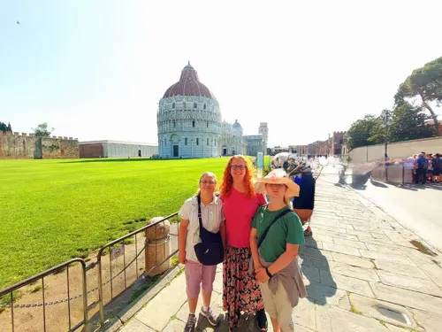


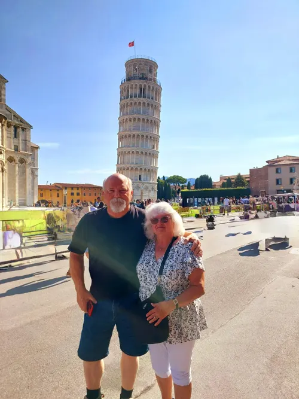

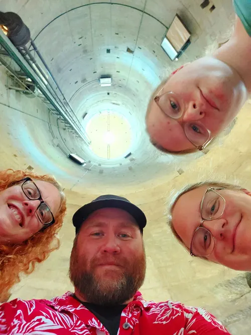

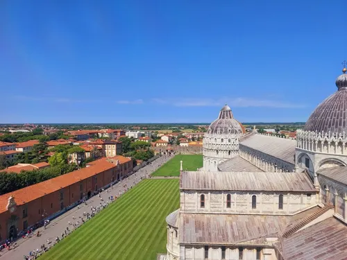

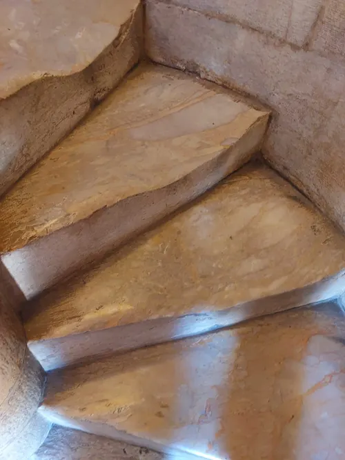

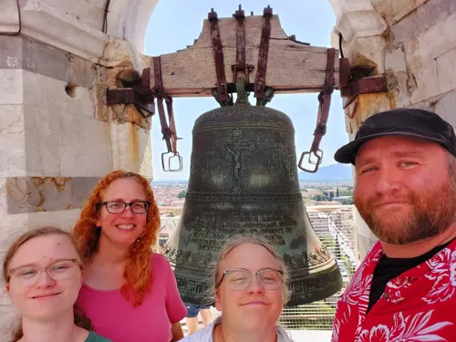

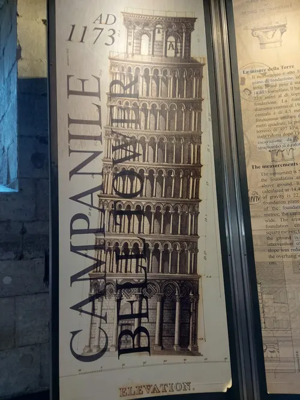

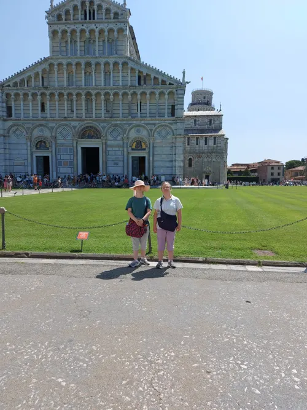

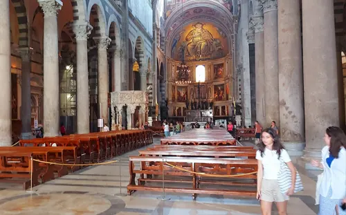

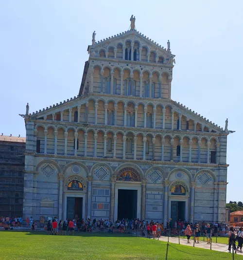

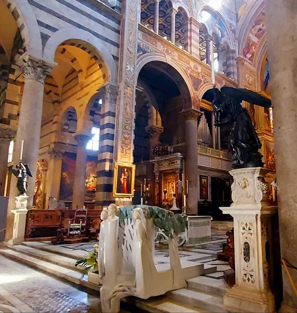